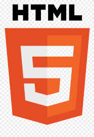

Simbolos: €, 𝕔, ℜ, $, ∐, †
Emojis: 🕴, 🎷, 🎶
Para adicionar imagens use a tag <img src="nome do arquivo" alt="texto alternativo >, o serto é que as imagens não passe de 1500px de largura.
Imagen jpeg na mesma pasta do arquivo index:

Imagen jpeg de uma subpasta no arquivo index:
Imagen de um site externo:
Em Negrito usando uma tag não semantica e em Destaque usando uma tag semantica
Em Italico usando uma tag não semantica e em Ênfase usando uma tag semantica
Marcação usando a tag < mark > na cor original.
Marcação com a cor alterada na propria tag de maneira isolada usando CSS .
Marcação com a cor alterada na parte HEAD na tag < style > usando CSS.
Letra grande usando uma tag não semantica, letra pequena usando uma tag semantica.
Texto Inserido texto Deletado.
Texto grifado usando uma tag qua não é mais semantica
Texto sobescrito 3020 + 2.
Texto subiscrito H2O.
Codico mono-espaçado Document.getElementById(text).
Codicos Pré-formatados.
module github.com/GoogleCloudPlatform/golang-samples/run/helloworld
go 1.13
Como dizia um pai de um amigo meu:O computador é um burro que faz contas simples muito rapidamente
Segundo uma reportagem do site GloboEsport.com:
Jogadores que chegam do exterior podem ser registrados apenas a partir de 1º de agosto, mas clube tentará a antecipação, ainda que considere improvável pela falta de precedentes
Essas são as linguagens usadas em sites HTML, CSS, JS.